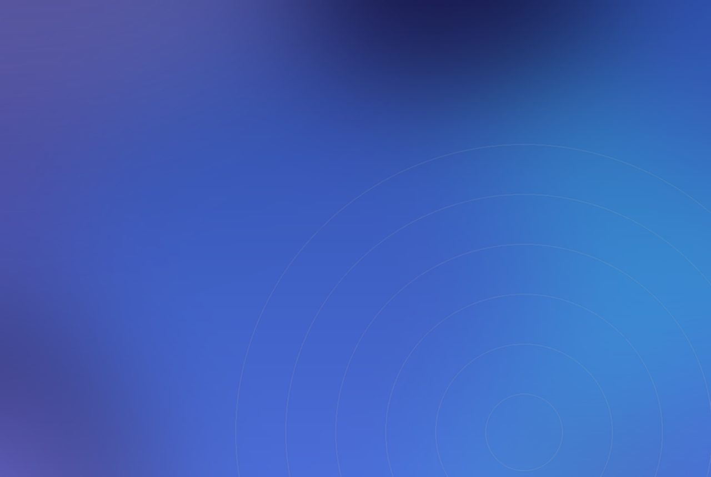

The news is not that another Comic Con happened. It is that exhibitors rebuilt their booths as broadcast studios, turning the floor into a live storefront.
Live, broadcast-style selling was one of the most widespread booth trends at New York Comic Con 2026, held 8 to 11 October at the Javits Center, according to Event Marketer. Exhibitors set up broadcast rigs on the floor, with cameras, lighting, live hosts and screens, so attendees could watch or join the selling in person. The standout was Whatnot's Liveplex, a 5,000 square foot, shopping-mall-inspired activation where sellers, including those without a standalone booth, could go live and sell from the floor, with Mass Appeal running its own store inside alongside artist and celebrity programming. Walmart ran 25 livestreams across the four days from a glass-walled structure and staged a multilayered collectibles booth with a 30th-anniversary pin giveaway, while eBay Live brought a branded Airstream trailer into its exhibit where seller partners ran auctions all four days. Fan-participation plays ran in parallel, including a Guinness World Records attempt by Jazwares for the largest gathering of people dressed as Spider-Man.
The real signal is the booth as broadcast studio
The surface story is that collectibles sold well at a fan convention, which they always do. The real signal is the form the selling took. A booth built around cameras, a host and a wall of screens is not a stand that hands out samples; it is a studio that happens to sit on a show floor. Whatnot even detached the activation from the exhibitor map, letting sellers broadcast without a fixed stand, which quietly turns the hall itself into shared studio space rather than a grid of rented boxes.
That reframes the economics of a booth. The room is the smaller audience; the stream is the larger one. Walmart's twenty-five scheduled livestreams and eBay's four days of trailer auctions are media buys as much as retail, and the physical build exists partly to give the broadcast a set and the stream a reason to be there in person.

What a producer can do now
If your audience is going to point a phone at your space regardless, design for the lens first. Decide where the host stands, how the product reads on camera, and how someone watching from home is invited to act, before you decide how many square feet of carpet you need. Plan the schedule like programming, with set times and repeatable segments, so the booth produces a feed across the run rather than a single crowded hour. The build is the backdrop; the broadcast is the product.
Why it belongs in an experiential toolkit
A space that performs for a camera and a crowd at once is a general experiential problem, not a retail quirk. The same discipline, hosts, lighting, screens and a clear on-camera moment, applies to a product launch, a brand house or a live show, and real-time graphics let the on-floor visuals and the broadcast overlay share one source rather than being built twice. Thinking of the booth as a set is what keeps the in-person and streamed versions of an activation coherent. We lay out that approach in our kit for shows.
SensaLab is the white-label real-time 3D and immersive layer that agencies and brands use to design and run experiences under their own name, whether the audience is standing in the hall or watching the stream. The collectibles were the draw. The studio is the thing worth building.